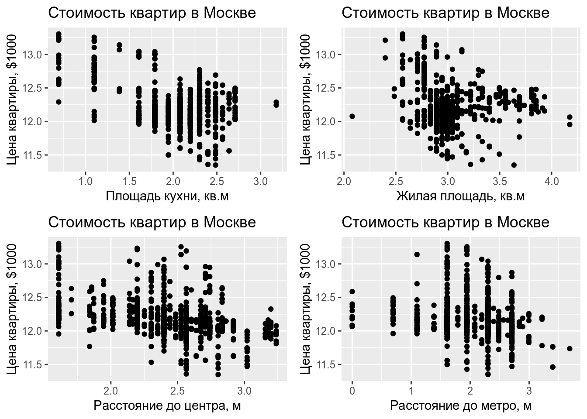

Коан 9 Гетероскедастичность в простой регрессии
Одним из нарушений условий ТГМ является гетероскедастичность, возникающая ввиду неодинаковых дисперсий для разных наблюдений. Она нежелательна ввиду того, что оценки МНК не являются эффективными (но остаются несмещёнными), и предпосылки для использования
t-статистик нарушены, что даёт неверный результат о значимости коэффициентов.
Этот коан благословит Вас на поиски гетероскедастичности и просветит о способах борьбы с ней.
Будем анализировать гетероскедастичность на данных о стоимости квартир.
Мини-теория:
Тест Уайта
Он неконструктивный, он может лишь показать наличие гетероскедастичности, асимптотический. Нормальность остатков в предпосылках не требуется, подразумевается, что \[E({\varepsilon^4_i}) = const\].
\[ \begin{cases} H_0: \sigma^2_i = \sigma^2 \\ H_1: \sigma^2_i \neq = \sigma^2 \\ \end{cases} \]
На первом шаге тест сохраняет остатки от построения начальной регрессии. \[ \hat{\ln{(pricemetr_i)}} = \hat{\beta}_0 + \hat{\beta}_{\ln{(kitsp)}} \cdot \ln{(kitsp_i)} + \hat{\beta}_{\ln{(livesp)}}\cdot \ln{(livesp_i)} + \hat{\beta}_{\ln{(dist)}}\cdot \ln{(dist_i)} + \hat{\beta}_{\ln{(metrdist)}}\cdot \ln{(metrdist_i)} \] На втором - строится вспомогательная регрессия (X_j-вектор j-го фактора). \[ \hat{e}^2_i = \hat{\alpha}_0 + \sum_{j=1}^{k} \hat{\alpha}_j \cdot X_j + \sum_{j=1}^{k} \hat{\gamma}_j \cdot X^2_j + \sum_{j < m}^{k} \hat{\delta}_j X_j \cdot X_m \]
R-squared построенной вспомогательной регрессии должен быть распределён как:
\[
n \cdot R^2_{aux} \sim \chi^2_{K-1}
\]
где K – число факторов во вспомогательной регрессии.
Тест Бройша - Пагана
Тест Бройша - Пагана — обобщённый вариант теста Уайта. В тесте Бройша-Пагана во вспомогательной регрессии можно брать любые функции от регрессоров, в тесте Уайта - регрессоры, их квадраты и кросс-произведения. Тест Бройша-Пагана является асимптотическим.
\[ \begin{cases} H_0: \sigma^2_i = \sigma^2 \\ H_1: \sigma^2_i \propto f(\alpha_0 + \alpha_1 \cdot Z_1 + \ldots + \alpha_p \cdot Z_p) \\ \end{cases} \]
Классическая версия Бройша - Пагана строится на основе метода максимального правдоподобия. Предпосылками классической версии теста являются нормальность остатков, существование у функции дисперсии из альтернативной гипотезы первой и второй производной. Считается LM-статистика, которая, при верной основной гипотезе об отсутствии гетероскедастичности, имеет хи-квадратное распределение с p-1 степенью свободы.
Современная модификация теста не требует нормальности остатков, лишь \[{\mathbb E}({\varepsilon^4_i}) = const\].
На первом шаге строится исходная регрессия и сохраняются остатки. Затем строится состоятельная оценка дисперсии: \[ \hat{\sigma}^2 = \frac{1}{n} \cdot \sum_{i=1}^{n} {e^2_i} \]
Потом строится вспомогательная регрессия:
\[ \frac{e^2}{\hat{\sigma}^2} = \alpha_0 + \alpha_1 \cdot Z_1 + \ldots + \alpha_p \cdot Z_p + u \]
И рассчитывается тестовая статистика:
\[ \frac{RSS_{aux}}{2} \sim \chi^2_{p} \]
Тест Голдфелда - Квандта
\[ \begin{cases} H_0: \sigma^2_i = \sigma^2 \\ H_1: \sigma^2_i \propto X_i \\ \end{cases} \]
Этот тест предполагает нормальность остатков и является неасимптотическим.
Процедура:
Сначала все наблюдения сортируются по возрастанию абсолютного значения фактора, вызывающего гетероскедастичность.
Затем отсортированный ряд по фактору делится на 3 примерно равные части. Считаются гетероскедастичности по первой и третьей части ряда.
Строится F- статистика:
\[ \frac{RSS_2}{RSS_1} \sim F_{r - k, r-k} \]
WLS как способ борьбы с гетероскедастичностью
Веса – оценка обратной дисперсии переменной, вызывающей гетероскедачность.
То есть оценим регрессию: \[ \frac{\ln{(pricemetr_i)}}{\hat{\sigma}_i} = \frac{\beta_0}{\hat{\sigma}_i} + \frac{\beta_{\ln{(kitsp)}} \cdot \ln{(kitsp_i)}}{\hat{\sigma}_i} + \frac{\beta_{\ln{(livesp)}} \cdot \ln{(livesp_i)}}{\hat{\sigma}_i} + \frac{\beta_{\ln{(dist)}} \cdot \ln{(dist_i)}}{\hat{\sigma}_i} + \frac{\beta_{\ln{(metrdist)}} \cdot \ln{(metrdist_i)}}{\hat{\sigma}_i} + \frac{\varepsilon_i}{\hat{\sigma}_i} \]
где r - размер первой и третьей частей отсортированного ряда.
8.1 R
Вызовем R в помощь в охоте на гетероскедастичность. Импортируем его оружейные пакеты.
library(rio) # импорт и экспорт данных в разных форматах
library(dplyr) # манипуляции с данными
library(lmtest) # тест Бройша-Пагана
library(sandwich) # оценка дисперсии при гетероскедастичности
library(UStatBookABSC) # WLS
library(estimatr) # получение робастных оценок
library(ggpubr) # для графиков
library(skimr) # для описательных статистикИмпортируем наш dataset, flats.dta:
Рассмотрим описательные статистики загруженного датасета.
| Name | flats |
| Number of rows | 773 |
| Number of columns | 44 |
| _______________________ | |
| Column type frequency: | |
| character | 2 |
| numeric | 42 |
| ________________________ | |
| Group variables | None |
Variable type: character
| skim_variable | n_missing | complete_rate | min | max | empty | n_unique | whitespace |
|---|---|---|---|---|---|---|---|
| sanuzel__1_razdel__0_sovm_ | 0 | 1 | 1 | 2 | 0 | 3 | 0 |
| okrug | 0 | 1 | 0 | 4 | 1 | 4 | 0 |
Variable type: numeric
| skim_variable | n_missing | complete_rate | mean | sd | p0 | p25 | p50 | p75 | p100 | hist |
|---|---|---|---|---|---|---|---|---|---|---|
| n | 0 | 1 | 395.48 | 228.89 | 1.00 | 196.00 | 397.00 | 595.00 | 7.880e+02 | ▇▇▇▇▇ |
| rooms | 0 | 1 | 1.00 | 0.00 | 1.00 | 1.00 | 1.00 | 1.00 | 1.000e+00 | ▁▁▇▁▁ |
| price | 0 | 1 | 7548674.66 | 2492693.71 | 3300000.00 | 5750000.00 | 6700000.00 | 8600000.00 | 1.750e+07 | ▇▇▃▁▁ |
| totsp | 0 | 1 | 37.82 | 9.90 | 15.00 | 32.00 | 38.00 | 42.00 | 7.500e+01 | ▂▇▃▂▁ |
| livesp | 0 | 1 | 21.45 | 7.25 | 8.00 | 18.00 | 19.00 | 21.00 | 6.500e+01 | ▇▆▁▁▁ |
| kitsp | 0 | 1 | 8.09 | 2.85 | 2.00 | 6.00 | 8.00 | 10.00 | 2.400e+01 | ▅▇▂▁▁ |
| dist | 0 | 1 | 12.19 | 4.66 | 5.00 | 9.00 | 11.50 | 15.00 | 2.550e+01 | ▆▇▅▁▁ |
| metrdist | 0 | 1 | 8.83 | 4.44 | 1.00 | 5.00 | 10.00 | 10.00 | 4.000e+01 | ▇▇▁▁▁ |
| walk | 0 | 1 | 0.46 | 0.50 | 0.00 | 0.00 | 0.00 | 1.00 | 1.000e+00 | ▇▁▁▁▇ |
| brick | 0 | 1 | 0.16 | 0.37 | 0.00 | 0.00 | 0.00 | 0.00 | 1.000e+00 | ▇▁▁▁▂ |
| tel | 0 | 1 | 0.91 | 0.30 | 0.00 | 1.00 | 1.00 | 1.00 | 3.000e+00 | ▁▇▁▁▁ |
| bal | 0 | 1 | 0.53 | 0.50 | 0.00 | 0.00 | 1.00 | 1.00 | 1.000e+00 | ▇▁▁▁▇ |
| floor | 0 | 1 | 0.83 | 0.38 | 0.00 | 1.00 | 1.00 | 1.00 | 1.000e+00 | ▂▁▁▁▇ |
| new | 0 | 1 | 0.31 | 0.46 | 0.00 | 0.00 | 0.00 | 1.00 | 1.000e+00 | ▇▁▁▁▃ |
| floors | 0 | 1 | 15.71 | 9.09 | 3.00 | 9.00 | 14.00 | 19.00 | 4.800e+01 | ▇▅▂▂▁ |
| nfloor | 0 | 1 | 7.93 | 7.99 | 1.00 | 3.00 | 6.00 | 11.00 | 1.270e+02 | ▇▁▁▁▁ |
| floor1 | 0 | 1 | 0.10 | 0.30 | 0.00 | 0.00 | 0.00 | 0.00 | 1.000e+00 | ▇▁▁▁▁ |
| floor2 | 0 | 1 | 0.07 | 0.26 | 0.00 | 0.00 | 0.00 | 0.00 | 1.000e+00 | ▇▁▁▁▁ |
| nw | 0 | 1 | 0.41 | 0.49 | 0.00 | 0.00 | 0.00 | 1.00 | 1.000e+00 | ▇▁▁▁▆ |
| w | 0 | 1 | 0.20 | 0.40 | 0.00 | 0.00 | 0.00 | 0.00 | 1.000e+00 | ▇▁▁▁▂ |
| sw | 0 | 1 | 0.39 | 0.49 | 0.00 | 0.00 | 0.00 | 1.00 | 1.000e+00 | ▇▁▁▁▅ |
| price_meter | 0 | 1 | 207308.48 | 74861.22 | 84930.44 | 167187.50 | 189393.90 | 223076.90 | 6.000e+05 | ▇▇▁▁▁ |
| ln_price_meter | 0 | 1 | 12.19 | 0.30 | 11.35 | 12.03 | 12.15 | 12.32 | 1.330e+01 | ▁▇▇▁▁ |
| ln_livesp | 0 | 1 | 3.02 | 0.27 | 2.08 | 2.89 | 2.94 | 3.04 | 4.170e+00 | ▁▃▇▁▁ |
| ln_totsp | 0 | 1 | 3.60 | 0.28 | 2.71 | 3.47 | 3.64 | 3.74 | 4.320e+00 | ▁▁▇▅▁ |
| ln_kitsp | 0 | 1 | 2.02 | 0.41 | 0.69 | 1.79 | 2.08 | 2.30 | 3.180e+00 | ▂▁▇▇▁ |
| ln_dist | 0 | 1 | 2.43 | 0.40 | 1.61 | 2.20 | 2.44 | 2.71 | 3.240e+00 | ▂▃▇▅▂ |
| ln_metrdist | 0 | 1 | 2.04 | 0.55 | 0.00 | 1.61 | 2.30 | 2.30 | 3.690e+00 | ▁▁▆▇▁ |
| ln_metrdist_walk | 0 | 1 | 0.97 | 1.09 | 0.00 | 0.00 | 0.00 | 2.08 | 3.690e+00 | ▇▁▃▃▁ |
| ln_livesp_sq | 0 | 1 | 9.22 | 1.74 | 4.32 | 8.35 | 8.67 | 9.27 | 1.743e+01 | ▁▇▁▁▁ |
| ln_totsp_sq | 0 | 1 | 13.01 | 1.94 | 7.33 | 12.01 | 13.23 | 13.97 | 1.864e+01 | ▁▂▇▃▁ |
| ln_kitsp_sq | 0 | 1 | 4.24 | 1.48 | 0.48 | 3.21 | 4.32 | 5.30 | 1.010e+01 | ▂▇▆▁▁ |
| ln_dist_sq | 0 | 1 | 6.04 | 1.88 | 2.59 | 4.83 | 5.97 | 7.33 | 1.049e+01 | ▅▅▇▅▂ |
| ln_metrdist_sq | 0 | 1 | 4.49 | 2.07 | 0.00 | 2.59 | 5.30 | 5.30 | 1.361e+01 | ▅▇▃▁▁ |
| ln_floors | 0 | 1 | 2.59 | 0.59 | 1.10 | 2.20 | 2.64 | 2.94 | 3.870e+00 | ▃▅▆▇▃ |
| ln_nfloor | 0 | 1 | 1.70 | 0.89 | 0.00 | 1.10 | 1.79 | 2.40 | 4.840e+00 | ▅▆▇▂▁ |
| ln_floors_sq | 0 | 1 | 7.05 | 3.03 | 1.21 | 4.83 | 6.96 | 8.67 | 1.499e+01 | ▃▇▇▅▂ |
| ln_nfloor_sq | 0 | 1 | 3.69 | 3.04 | 0.00 | 1.21 | 3.21 | 5.75 | 2.347e+01 | ▇▃▁▁▁ |
| non_livesp | 0 | 1 | 8.29 | 4.65 | 0.00 | 5.00 | 8.00 | 11.00 | 2.500e+01 | ▅▇▅▁▁ |
| ln_totsp2 | 0 | 1 | 13.01 | 1.94 | 7.33 | 12.01 | 13.23 | 13.97 | 1.864e+01 | ▁▂▇▃▁ |
| ln_totsp3 | 0 | 1 | 28.34 | 8.55 | 8.99 | 24.15 | 25.53 | 28.22 | 7.274e+01 | ▂▇▁▁▁ |
| ln_price_metr | 0 | 1 | 12.19 | 0.30 | 11.35 | 12.03 | 12.15 | 12.32 | 1.330e+01 | ▁▇▇▁▁ |
Построим простую линейную регрессионную модель, на которой будем проверять гетероскедастичность.
reg = lm(ln_price_metr ~ 1 + ln_livesp + ln_kitsp + ln_dist + ln_metrdist, data = flats)
summary(reg)
Call:
lm(formula = ln_price_metr ~ 1 + ln_livesp + ln_kitsp + ln_dist +
ln_metrdist, data = flats)
Residuals:
Min 1Q Median 3Q Max
-0.62723 -0.16125 -0.00845 0.13614 0.77618
Coefficients:
Estimate Std. Error t value Pr(>|t|)
(Intercept) 14.19920 0.13492 105.243 < 2e-16 ***
ln_livesp -0.16053 0.03723 -4.312 1.83e-05 ***
ln_kitsp -0.29913 0.02300 -13.007 < 2e-16 ***
ln_dist -0.33025 0.02367 -13.952 < 2e-16 ***
ln_metrdist -0.05738 0.01560 -3.679 0.000251 ***
---
Signif. codes: 0 '***' 0.001 '**' 0.01 '*' 0.05 '.' 0.1 ' ' 1
Residual standard error: 0.2309 on 768 degrees of freedom
Multiple R-squared: 0.4179, Adjusted R-squared: 0.4149
F-statistic: 137.9 on 4 and 768 DF, p-value: < 2.2e-16Проверим наличие гетероскедастичности визуально. Построим зависимости цены квартир от объясняющих факторов.
kit = ggplot(flats) + geom_point(aes(x = ln_kitsp, y = ln_price_metr)) +
labs(x = "Площадь кухни, кв.м", y = "Цена квартиры, $1000",
title = "Стоимость квартир в Москве")
live = ggplot(flats) + geom_point(aes(x = ln_livesp, y = ln_price_metr)) +
labs(x = "Жилая площадь, кв.м", y = "Цена квартиры, $1000",
title = "Стоимость квартир в Москве")
dist = ggplot(flats) + geom_point(aes(x = ln_dist, y = ln_price_metr)) +
labs(x = "Расстояние до центра, м", y = "Цена квартиры, $1000",
title = "Стоимость квартир в Москве")
metrdist = ggplot(flats) + geom_point(aes(x = ln_metrdist, y = ln_price_metr)) +
labs(x = "Расстояние до метро, м", y = "Цена квартиры, $1000",
title = "Стоимость квартир в Москве")
ggarrange(kit, live, dist, metrdist, ncol = 2, nrow = 2)
Из сета красивых графиков видно, что гетероскедастичность присутствует. В частности, подозрительны переменные ln_kitsp и ln_metrdist.
Проверим наличие гетероскедастичности с помощью тестов.
Начнём с теста Уайта.
Тест Уайта реализуется в R (ручками) как:
bptest(reg, varformula = ~ (ln_livesp + ln_kitsp + ln_dist + ln_metrdist)^2 + I(ln_livesp ^ 2) + I(ln_kitsp ^ 2) + I(ln_dist ^ 2) + I(ln_metrdist ^ 2),
data = flats)
studentized Breusch-Pagan test
data: reg
BP = 89.02, df = 14, p-value = 5.81e-13Тест Уайта выявил гетероскедастичность.
Проведём тест Бройша - Пагана.
Классическая версия Бройша - Пагана реализуется в r по команде:
Breusch-Pagan test
data: reg
BP = 18.39, df = 4, p-value = 0.001035Модифицированная версия теста Бройша - Пагана реализуется по команде:
studentized Breusch-Pagan test
data: reg
BP = 15.778, df = 4, p-value = 0.003332Причем, если отдельно не указать спецификацию вспомогательной регрессии, то bptest() возьмёт все регрессоры исходной модели.
В обеих версиях теста Бройша - Пагана гетероскедастичность обнаружена.
Ещё есть тест Голдфелда - Квандта.
Предположим, что дисперсии случайных ошибок растут с ростом площади кухни, kitsp.
flats_ordered = arrange(flats, kitsp)
reg_gqtest = lm(ln_price_metr ~ ln_livesp + ln_kitsp + ln_dist + ln_metrdist,
data = flats_ordered)
gqtest(reg_gqtest, fraction = 0.34) # посередине отсортированного ряда лежит 34% наблюдений
Goldfeld-Quandt test
data: reg_gqtest
GQ = 1.1072, df1 = 251, df2 = 250, p-value = 0.2106
alternative hypothesis: variance increases from segment 1 to 2Будет также полезным познакомиться с методами борьбы с гетероскедастичностью.
Способ 1. Взвешенный МНК. В R его можно осуществить так:
reg_wls = lm(data = flats,
ln_price_metr ~ ln_livesp + ln_kitsp + ln_dist + ln_metrdist,
weights = fitted(lm(abs(residuals(reg)) ~ ln_kitsp)) ^ 2)
summary(reg_wls)
Call:
lm(formula = ln_price_metr ~ ln_livesp + ln_kitsp + ln_dist +
ln_metrdist, data = flats, weights = fitted(lm(abs(residuals(reg)) ~
ln_kitsp))^2)
Weighted Residuals:
Min 1Q Median 3Q Max
-0.105299 -0.029659 -0.001107 0.025053 0.155867
Coefficients:
Estimate Std. Error t value Pr(>|t|)
(Intercept) 14.28313 0.13557 105.357 < 2e-16 ***
ln_livesp -0.16102 0.03849 -4.183 3.2e-05 ***
ln_kitsp -0.33901 0.02245 -15.098 < 2e-16 ***
ln_dist -0.33075 0.02406 -13.749 < 2e-16 ***
ln_metrdist -0.05859 0.01587 -3.691 0.000239 ***
---
Signif. codes: 0 '***' 0.001 '**' 0.01 '*' 0.05 '.' 0.1 ' ' 1
Residual standard error: 0.04242 on 768 degrees of freedom
Multiple R-squared: 0.4683, Adjusted R-squared: 0.4655
F-statistic: 169.1 on 4 and 768 DF, p-value: < 2.2e-16!!!! Проверить веса!!!!
Способ 2. Робастные оценки Уайта.
reg_hc = lm_robust(data = flats,
ln_price_metr ~ ln_livesp + ln_kitsp + ln_dist + ln_metrdist)
summary(reg_hc)
Call:
lm_robust(formula = ln_price_metr ~ ln_livesp + ln_kitsp + ln_dist +
ln_metrdist, data = flats)
Standard error type: HC2
Coefficients:
Estimate Std. Error t value Pr(>|t|) CI Lower CI Upper DF
(Intercept) 14.19920 0.15982 88.846 0.000e+00 13.88546 14.51293 768
ln_livesp -0.16053 0.04114 -3.902 1.039e-04 -0.24129 -0.07976 768
ln_kitsp -0.29913 0.02855 -10.476 4.275e-24 -0.35518 -0.24308 768
ln_dist -0.33025 0.02409 -13.710 1.992e-38 -0.37754 -0.28296 768
ln_metrdist -0.05738 0.01460 -3.930 9.271e-05 -0.08604 -0.02871 768
Multiple R-squared: 0.4179 , Adjusted R-squared: 0.4149
F-statistic: 102.1 on 4 and 768 DF, p-value: < 2.2e-16Робастные оценки коэффициентов регрессии получаются состоятельными.